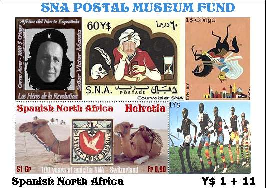

|
Created:
05/19/01. Revised: 01/07/06. |
|
|
I have
offended God and mankind because my work did not In order to promote the philatelic activity and to raise funds for the expansion of its Postal Museum, the SNA Postal Administration has issued a very special sheet of five stamps. The stamps shown on the sheet belong to the most desired and discussed topical stamps of the SNA. The sheet is shown below, at 75 per cent if its real size.  This miniature sheet, expected with impatience by the philatelic on-line community, was officially launched on 18th of May 2001. The print run was limited to only 10,000 pieces, the exemplar with the No. 0,000 being conserved at the SNA Postal Museum and that with the No. 9,999 being sent to the UPU. The numbers are printed on the reverse, gummed side of the sheet. The surtax of only Y$ 11 will allow for the expansion as well of the museum, as of its security services. The sheet was printed using the same innovative and complex sand & stone lithography process, in 10 colors, by the printing office Courvoisier SNA, in Ciedad de Leon. The complexity of the process, like in the case of the Swiss embroidery stamp, doesn't permit for the resuming of the printing at a later time. The sheet is valid for franking till the 1st of June 2001. Another recent acquisition of the SNA Postal museum is that of the very rare t·te-b·che pair of Inverted and Normal imperforate Princy, an absolute unique piece of an SNA collection. It is shown below, on the left.
Incredible, but true! A second Inverted Princy was found by our friend, Mr. Bob Ingraham from Canada. We publish the stamp (above, on the right) and the original press release, published on RCSD: I was going
through a nickel box at a stamp shop in Vancouver today, and came up with
what is probably THE PHILATELIC FIND OF THE NEW MILLENNIUM -- a pair of used
Spanish North Africa stamps, partially imperf, with the image of one of them
inverted. And not only inverted, but with some obvious errors: The inverted
portion (a horse) has two heads, three hind legs, and no ears. And the
cancellation is the rare "spaced-out bars" variety -- the killer
bars are not evenly spaced, as in normal cancellations. Like, I mean, what
are the odds of all these errors appearing in one stamp, much less in a
partially imperf pair. Oh yeah, I almost forgot: the inverted stamp also has
another error: it says "$1 Gringi" instead of the correct "$1
Gringo". Please click here for more information about this exceptional piece of SNA philately.
|
|
Created:
05/19/01. Revised: 01/07/06. |
|